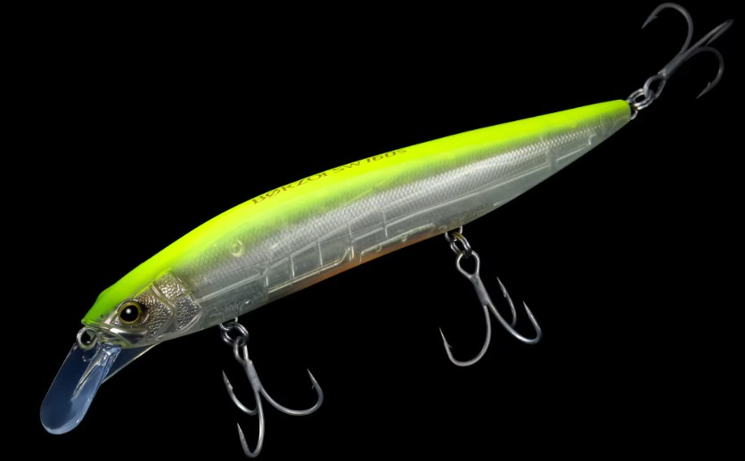
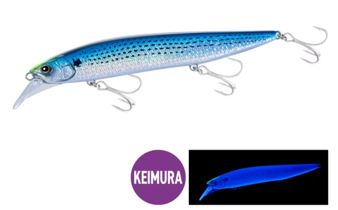
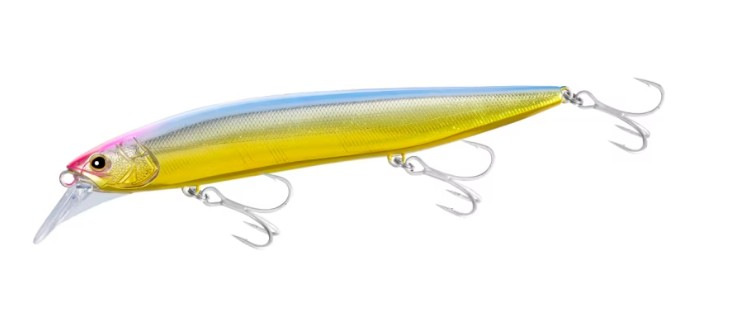
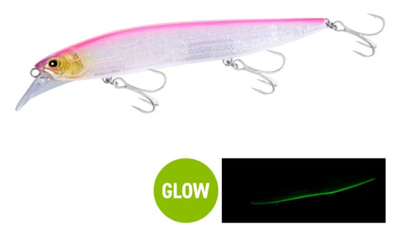
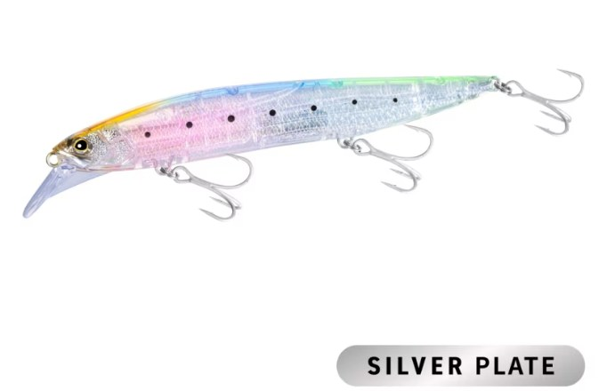
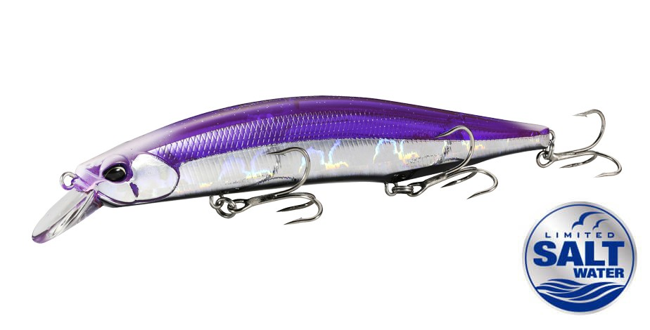
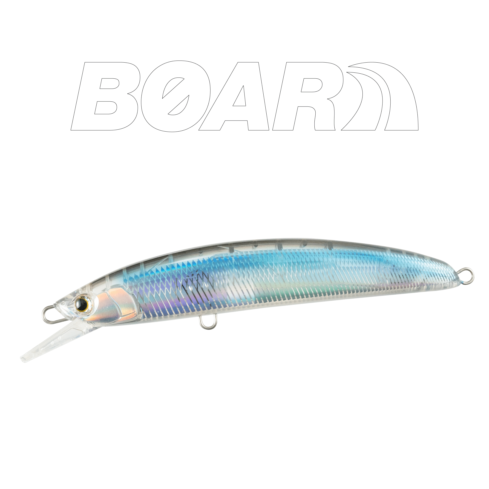

ボルゾイSW160S
（ビッグベイトミノー）
ボルゾイSW160S（BORZOI SW 160S）はSHIMANO（シマノ）のシンキングタイプのビッグベイトミノーです。
ビッグベイトでは速さが足りず見切られ、100mm前後のルアーではボリュームが足りない——そんな大型ベイトパターンのために生まれた160mmモデル。ビッグシルエットのインパクトと、ミノーならではのスピード・キレを両立しているのが最大の魅力です。

画像出典:SHIMANO公式HP
スペック
- メーカー
- シマノ（SHIMANO）
- タイプ
- シンキングミノー（ビッグベイトミノー）
- 全長
- 160mm
- 自重
- 36g
- フック
- #2×3
- ターゲット
- シーバス・サワラ・青物
- 価格
- 2,900円（税抜）／FLASH BOOST 3,100円（税抜）
- 発売
- 2026年9月
▼今すぐチェック

ボルゾイSW160Sの特徴
160mmの存在感を、ビッグベイトより軽いタックルで投げ続けられるビッグジャーキングミノー
-
薄型ボディで160mmを感じさせないキレ
サイドから見たボリューム感は維持しつつ、上から見たボディ幅を可能な限り薄く設計。ただ巻きのキレのあるスイミングはもちろん、わずかなロッドワークにも反応するハイレスポンスなダートアクションを実現している。
-
ジェットブースト1.0＋薄型リブで安定した遠投性能
軸可動構造のジェットブースト1.0を搭載し、キャスト時はウェイトが後方へ移動して飛距離を確保、スイム時は低重心化してキレを生む。リップ下部に配置した薄型リブが、薄いボディ特有の飛行姿勢のバタつきを抑える。
-
大型の8カンで不意のビッグファイトにも対応
ビッグミノーゲームではエリアのMAXサイズがヒットしても不思議ではない。大型の8カンを搭載し、シーバス・サワラ・青物など10kg、メーターを超える大物とのファイトにも対応できる強度を備える。
ボルゾイSW160Sの使い方
基本はただ巻きとジャークの組み合わせ。薄型ボディはリトリーブ抵抗が軽く、ゆっくり巻いてもしっかり泳いでレンジにも入ってくれるため、まずはただ巻きで広範囲をトレースする。
魚がチェイスしてきた時や反応が薄い時は、ジャークを入れてダートさせ、一瞬のヒラ打ち・フラッシングで食わせのスイッチを入れる。ファストリトリーブにも対応するので、追ってきた魚を見切らせないスピードで引けるのもビッグベイトにはないメリット。ナイトゲームではロッドを立てて表層をゆっくり通す使い方も有効です。
ボルゾイSW160Sの得意な状況
マイワシ・コノシロ・アジ・サヨリなど大型のベイトを捕食している状況が最大の出番。
濁り・荒天・ローライトでルアーの存在感を強調したい時や、広大なエリアで広範囲から魚を呼びたい時にも強い。ビッグベイトを一日投げ続けるのはしんどいが、大きいシルエットで大型魚を狙いたい場面で選びたい1本です。
ワンポイント
70g級のビッグベイトのような専用タックルは不要で、シーバス・サワラ用のやや強めのロッドで扱えるウェイト設定です。ビッグベイトの合間に投げる「中休み」的な使い方でも、ミノーに反応する魚を拾えます。
120mm前後のジャーキングミノーで反応がない時の一手として、ボックスに入れておくと選択肢が広がります。
ボルゾイSW160Sシリーズの使い分け
| モデル | 全長／自重 | 得意な場面 |
|---|---|---|
| 160S | 160mm／36g | ただ巻き・ジャーク全般・8色から状況に合わせて選べる（本記事のモデル） |
| 160S FLASH BOOST | 160mm／36g | ドリフトやポーズ中もフラッシングで誘い続けたい場面・デイゲーム |
ボルゾイSW160Sは通常モデルと、ボディ内部にスプリングで反射板を吊るしたフラッシュブースト搭載モデルの2タイプ展開。サイズ・重量は共通なので、ルアーを止めた時にもアピールを続けたいかどうかで選び分けるとよい。
オススメカラー
ボルゾイSW160Sは通常モデル8色＋フラッシュブースト搭載モデル2色の全10色展開。大型ベイトパターンでオススメのカラーを厳選して紹介します。

SKコノシロコノシロをイミテートした、ラインナップで最も色味の濃いシルエット重視カラー。ケイムラ仕様。

エッジパールゴールドゴールドのフラッシングを広く深く届ける、濁り潮に強いカラー。

ピンクバックパールシャッドパールホワイトでさまざまな水色に対応し、ベリーはグロー。サワラ・シーバス・青物に使いやすい。

STクリアイワシ（フラッシュブースト搭載）光量の多いデイゲームで強いクリア系。シルエットをぼかしつつイワシの残像を見せる。
画像出典:SHIMANO公式HP
ボルゾイSW160Sに似ているルアー
-

レアリス ジャークベイトSWリミテッド160S DUO 詳細はこちら＞全長160mm・自重35gのシンキングジャークベイト。同じ160mmクラスで、大型サワラや青物を飛距離と存在感で狙う考え方がボルゾイSW160Sと共通する。
-

ボアーSS170 マリア 詳細はこちら＞全長170mm・自重60gのロックショア青物専用ジャーキングミノー。大きなシルエットで青物やサワラを狙う、同じサイズ帯の選択肢になる。
-
 セットアッパー145S-DR
ダイワ
詳細はこちら＞
セットアッパー145S-DR
ダイワ
詳細はこちら＞
全長145mm・自重39gのシンキングダイバー。平均88.5mの遠投で中層を引けるので、大型ベイトパターンで一段下を探りたい時に持ち替えたい。